Devlog Fourteen Overview
In the last devlog I said I was gonna add some stuff related to enemies. I did not. Don't judge me. But I can say for a fact that the next devlog will involve enemies. I'm really feeling like working on them.
This devlog is just full of UI and stuff related to that. Just coding in stuff that really should've been in the game earlier than now. And some of the stuff in this devlog still isn't great. But I can only work on so much UI before I start to get extremely annoyed with it. So more finishing touches will have to wait till another day.
Main Features
First main feature will be the 2x2 crafter in the player's inventory. Along with the newly added section of the player's inventory. As you can imagine, it wasn't difficult at all to make the 2x2 crafter in the inventory. I just copy/ pasted the code for the crafting table, but removed some of the slots the player could put items into. But with this new feature, the player can chop wood, craft a Crafting Table, make a pick axe, and then go mining for diamonds. And now with a more proper player's inventory, I can add stuff to it in the future that might relate to player stuff. Such as current status effects, or an image of the player, or an off hand slot. There's a bunch of space in it, so I can add several stuff.

In the last devlog I believe, I did some rough UI work for the Furnace. Well in this devlog I touched it up a bit, and also added in the functionality for it. It still needs a few more touch ups for the player's sake, but it does work. Each item that can be smelted has a set time for how long they take to smelt, and how many of the newly created item will be made. And of course, the player has to use a fuel from a pre-approved list. Which right now is just Coal.
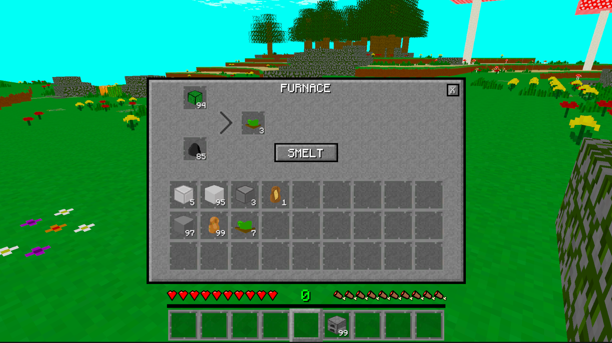
This next feature was added in a long while ago now, but I decided to improve upon it. It's the little pop up on the screen for when the player hovers over an item. I made it where the sizing fits the text a little better for long and short names. I also made it where extra text will get added when hovering over specific items like food or tools. This extra text will say how much the food will replinish the player's hunger, how much that attack will do, and several other things along that line.
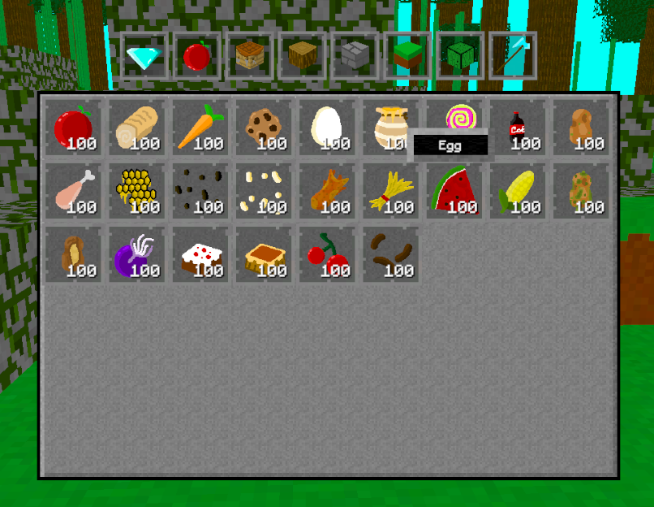
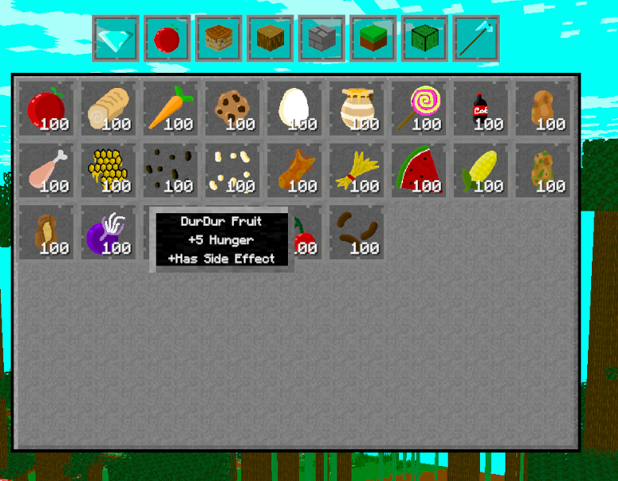
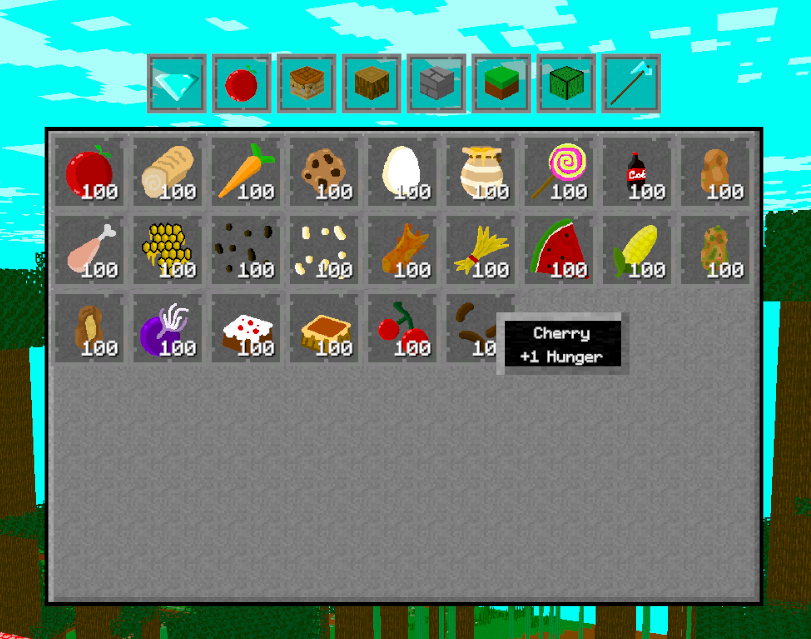
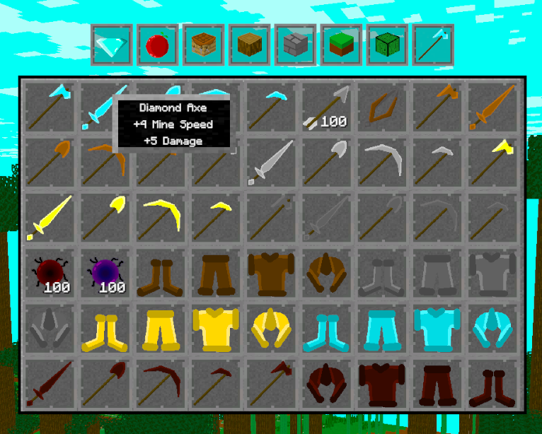
In the creative menu, there is no indication for what section of items the player is looking at. Somehow I didn't add anything like that until now. Well, now I have a tab highlight to help show the player what section they're currently in. And not that it matters that much, but when the player opens the creative inventory, it'll hover over the tab for the section the player was last in.
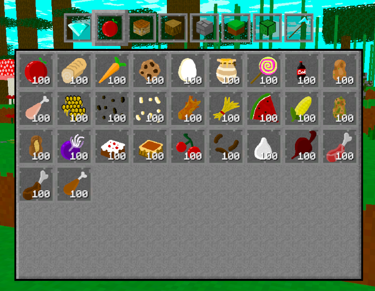
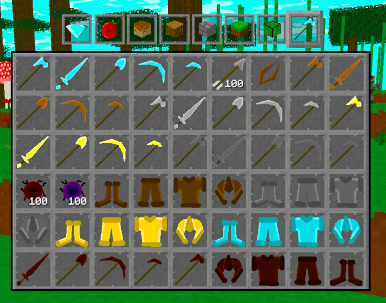
For this final UI feature, I added in the chest block along with a UI for it. When the player places a chest and opens it, a UI object will generate and link itself to that specific chest block. Which just means that each chest will have it's own UI and not share items. As it should be. Though thinking back, I really should've made an ender chest first to set a basis for the code.
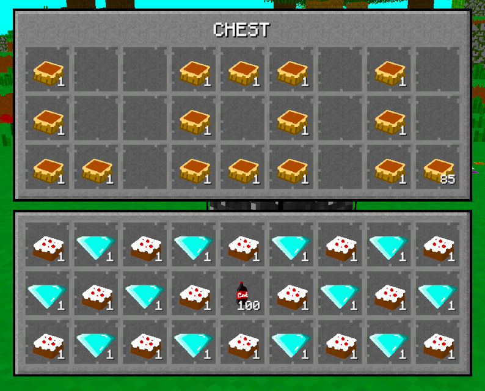
And I was trying to set up saving for the chests, but it's proving to be more complicated than I thought. The problem I'm dealing with is that the chests can be placed and destroyed. This is just leading to many complications with save files and loading and what not. So I'm saving this for a saving related devlog update in the future. I'm just getting sick of working on it right now.
Blocks
There isn't much here sadly, but there will always be something. Firstly there's the chest block I added into the game.
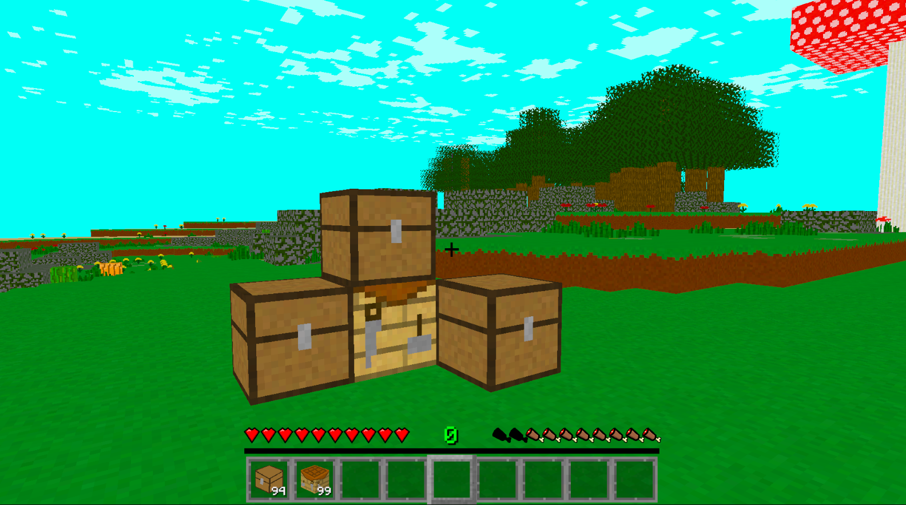
Then there's the newly added block type: carpets. I have the wool version for all of them. I'm really thinking of adding other carpet types in the future since it'd be really easy to do. Like maybe something for leather? Or carpets with an coloured edge to them? It's stuff I can do. It'll just add a lot more blocks to the game. I'm already over 500 blocks and items currently. Really doesn't feel like it though.
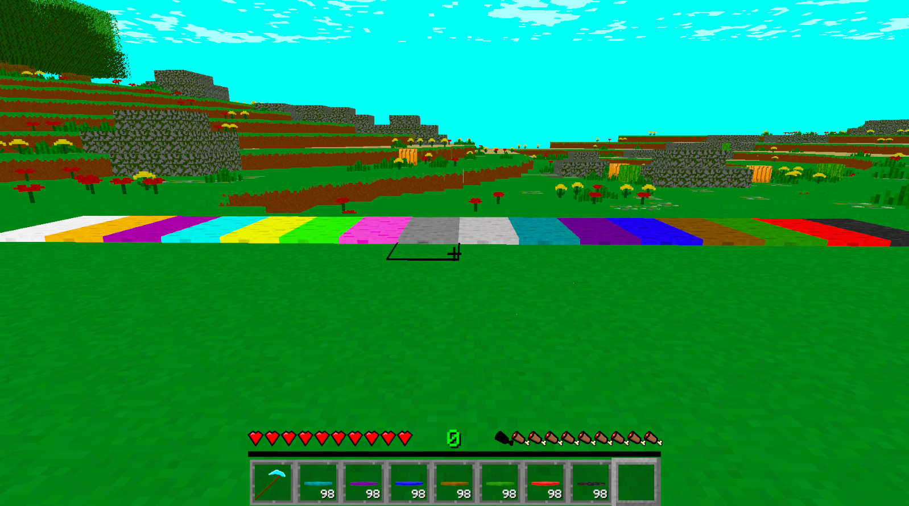
Recipes
Given the nature of this devlog update, I thought it time to start really working on the recipes in the game. Because I'll be honest: I haven't given many items a crafting recipe. Literally the only way to get most of the blocks is solely from the creative menu. Which will be a problem when I finally seperate the two gamemodes. So I'm gonna start really working on this. So here is a bunch of recipes for items in the game. Just to give you a taste. Oh, and I've also of course added a bunch of stuff that can be smelted. Like ores, some blocks, a couple dyes, glass, and more. And when I've been adding in recipes, I've also been checking if it'll work for the 2x2 crafter in the player's inventory.
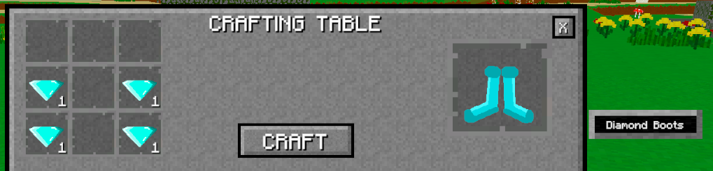
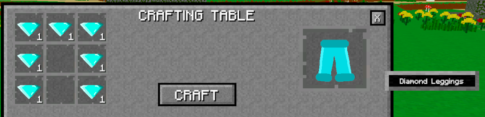
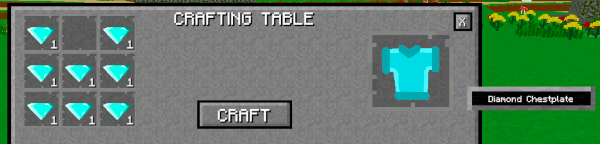
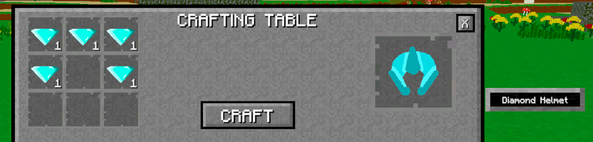
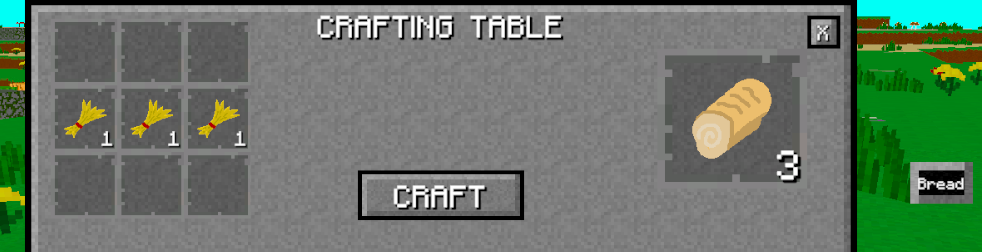
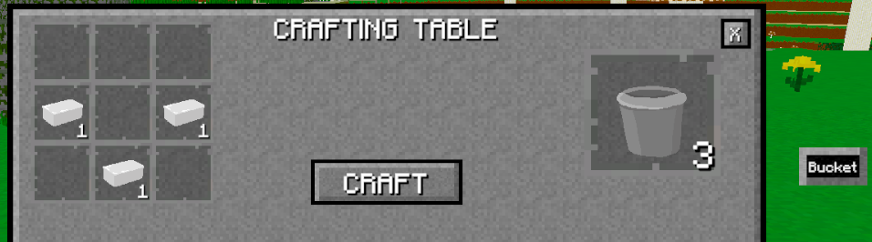
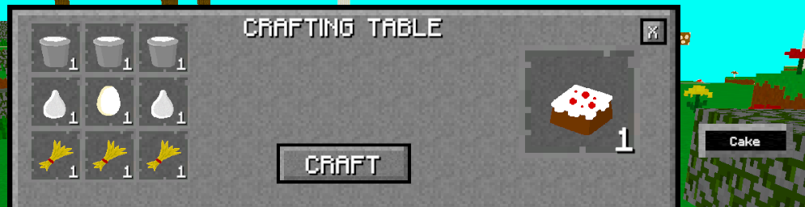
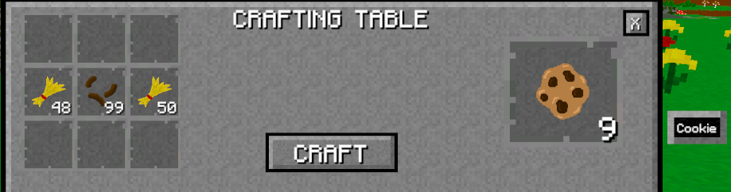
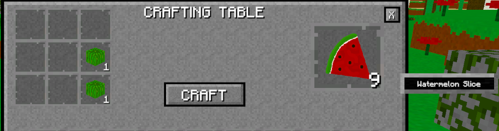
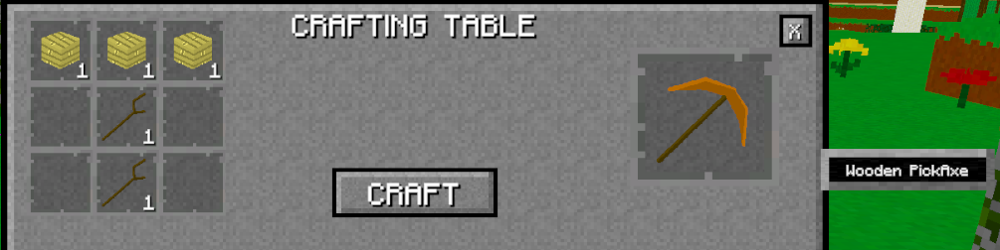
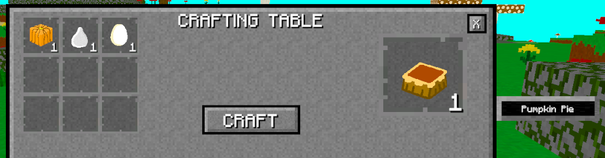
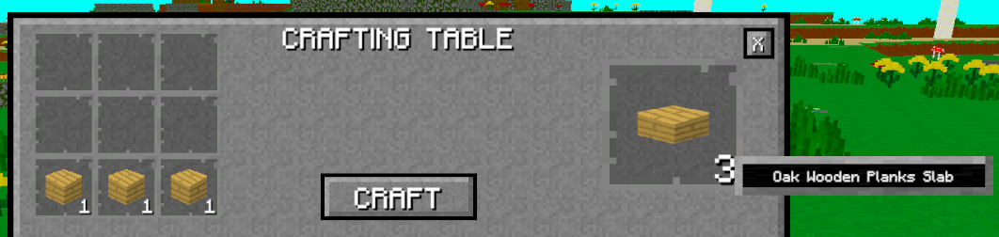
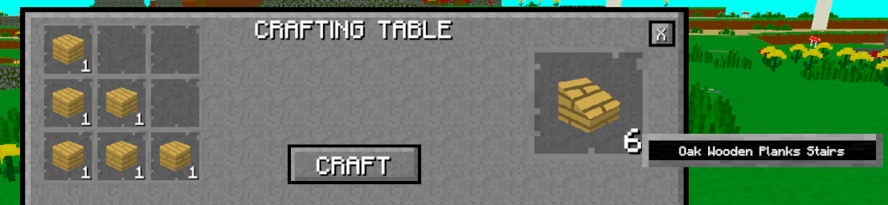
Oh, and I'm also slowly working on a Recipe page for this website. I've decided I don't want a recipe book in the game. I want player's to put in at least a small amount of effort to find out how to get items. Oh, and I took those pictures above before I did the work on the item info pop up. Just in case you had any thoughts about that.
Conclusion
Now that the game has all this new UI and the player can craft and smelt stuff, it doesn't feel as incomplete. Only by a fraction, but still. And I'm going to continue working on more crafting recipes and stuff to smelt. Like I still haven't even hit most of the blocks in the game for that stuff. There's just so many items.
Speaking of items... you may only know what I'm talking about if you know coding, but I'm going to continue anyways. I didn't know I was going to add quite this many blocks and items to the game when I first started working on the project. So all the items are just an array for a class that has all the block details. This isn't great. So, I've been slowly moving everything over to scriptable objects. But this has been such a pain, and something I really should've done so long ago. Again, there's over 500 items currently. So it's going to take a while, but it'll be good for the long term.
I said this in the introduction, but the next devlog will be related the enemies and mobs. I've actually already started working on it. So look forward to that.
Oh, and I'm going to stop adding the pictures at the end of the devlogs. I've decided that I don't like it. I'm going to keep the pictures for the other devlogs though.